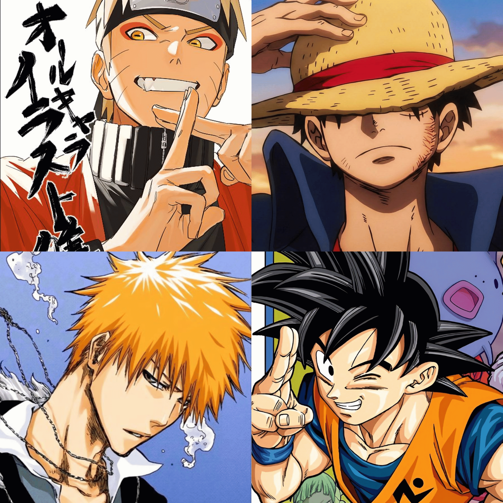
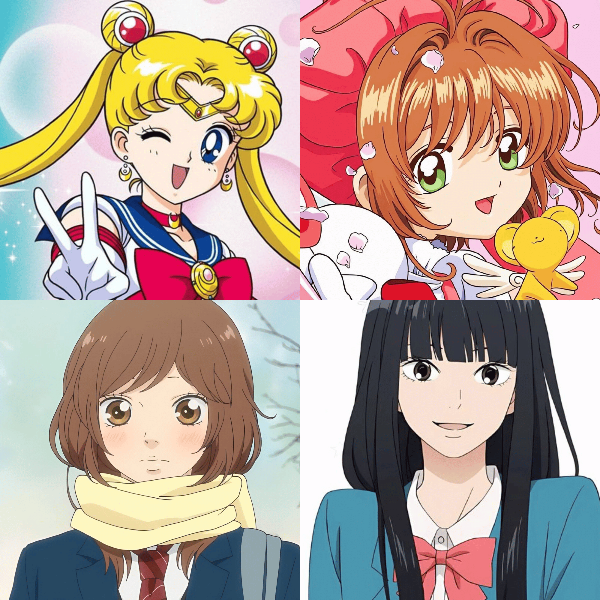
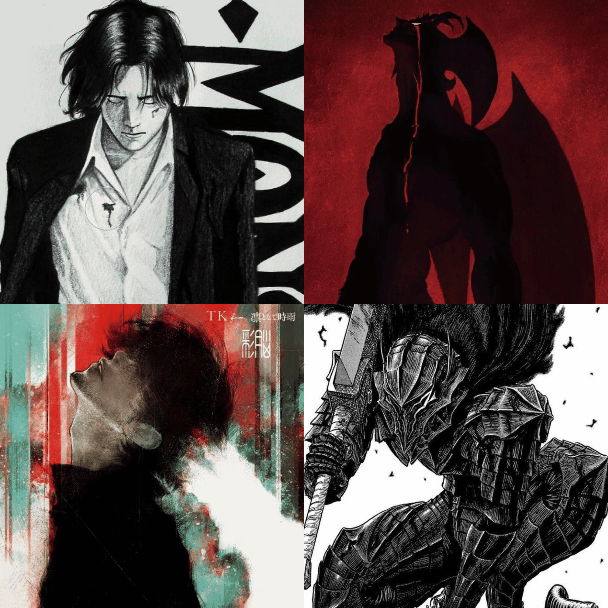
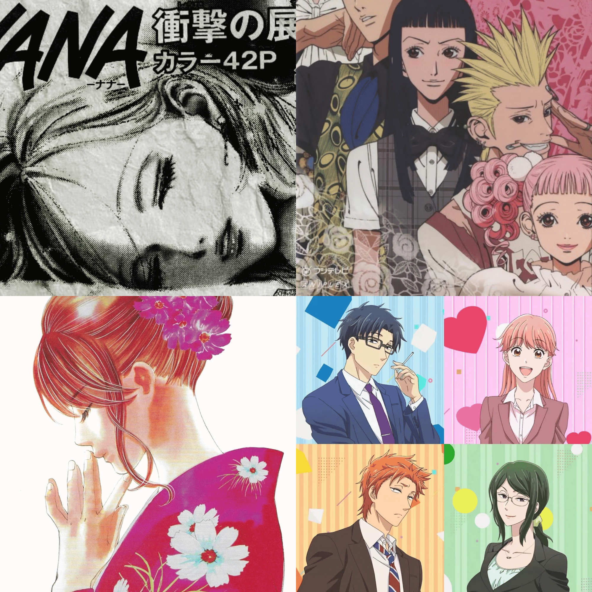
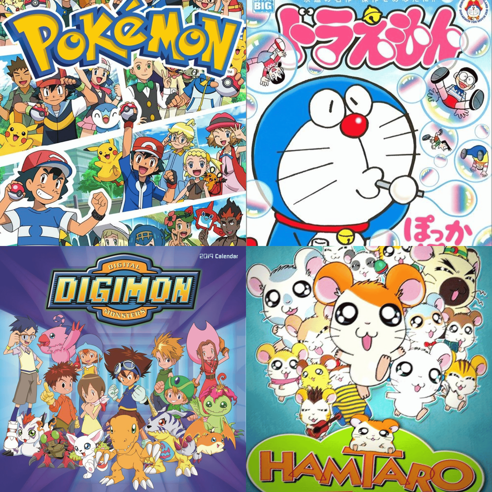
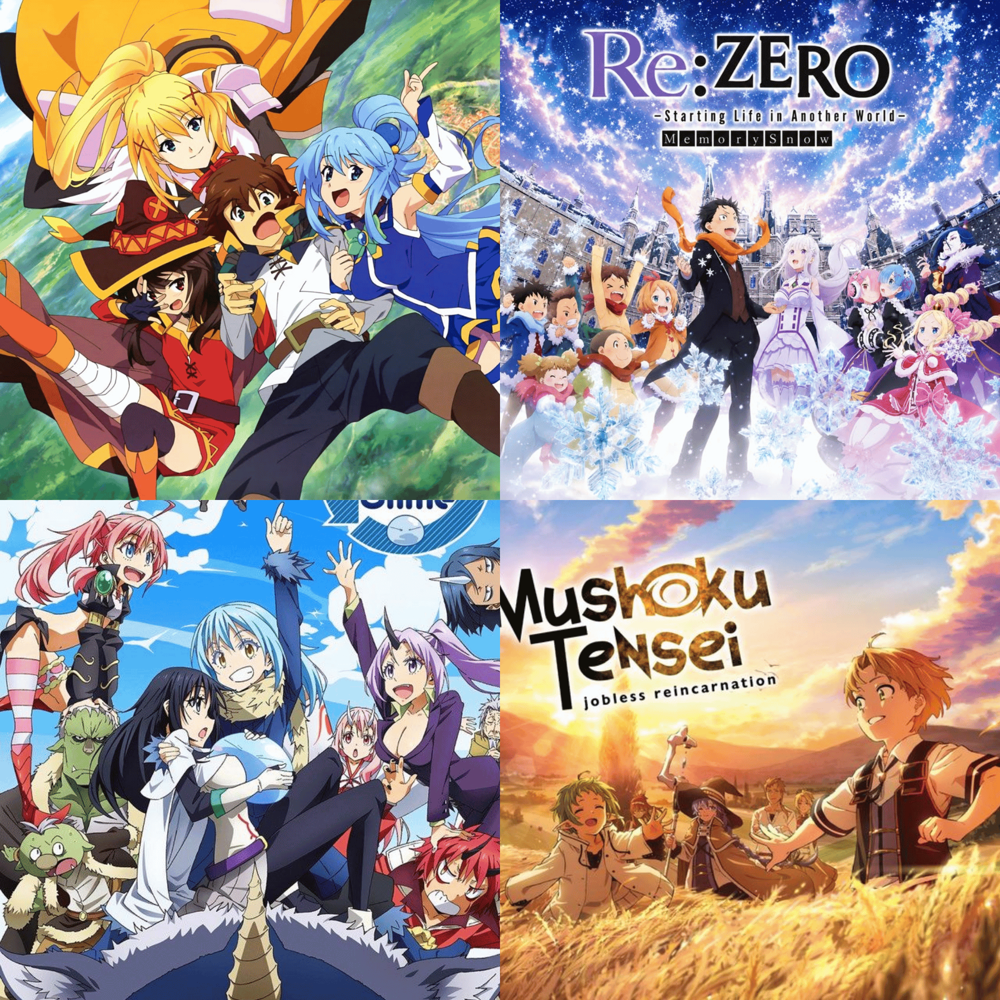

SHONEN
El shōnen está dirigido principalmente a adolescentes. Sus historias suelen destacar la acción, la aventura, la amistad y la superación personal, con protagonistas que crecen enfrentando nuevos desafíos.
Ver lista
SHOUJO
El shōjo está orientado a adolescentes y se centra en las emociones, el romance y las relaciones personales. Sus historias suelen explorar el crecimiento emocional y los vínculos entre los personajes.
Ver lista
SEINEN
El seinen está dirigido a un público adulto y aborda temas más complejos y maduros. Puede incluir acción, suspenso, drama o elementos psicológicos con un enfoque más realista.
Ver lista
JOSEI
El josei está pensado para mujeres adultas y presenta historias sobre la vida cotidiana, el trabajo y las relaciones amorosas desde una perspectiva más madura y realista.
Ver lista
KODOMO
El kodomo está dirigido al público infantil. Sus historias son sencillas, entretenidas y transmiten valores como la amistad, el respeto, el trabajo en equipo y la imaginación.
Ver lista
ISEKAI
El isekai como tal no es una demografía, es un género donde el protagonista es transportado o renace en un mundo diferente al suyo. Sus historias suelen combinar fantasía, aventuras, magia y la exploración de nuevos mundos.
Ver lista